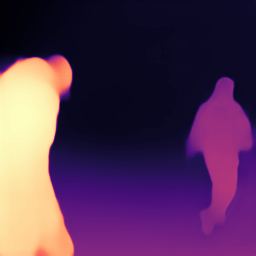
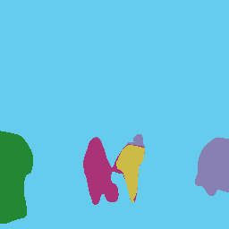
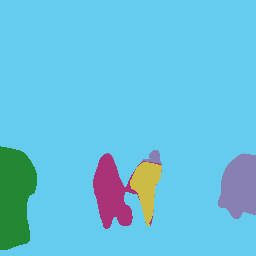
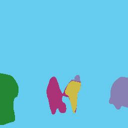

Input
and seed points
and seed points
Disparity
Embedding PCA
(dimensions 0–2)
(dimensions 0–2)
Embedding PCA
(dimensions 3–5)
(dimensions 3–5)
Induced
segmentation
segmentation

 

We introduce a way to learn to estimate a scene representation from a single image by predicting a low-dimensional subspace of optical flow for each training example, which encompasses the variety of possible camera and object movement. Supervision is provided by a novel loss which measures the distance between this predicted flow subspace and an observed optical flow. This provides a new approach to learning scene representation tasks, such as monocular depth prediction or instance segmentation, in an unsupervised fashion using in-the-wild input videos without requiring camera poses, intrinsics, or an explicit multi-view stereo step. We evaluate our method in multiple settings, including an indoor depth prediction task where it achieves comparable performance to recent methods trained with more supervision.
We have released Tensorflow code for flow basis generation, SVD-based projection and accompanying loss functions, network defintions, and some utilities.
[Github]
Each row of the following table shows an input image (overlaid with a few manually chosen seed points) and the predicted outputs (disparity and embedding) from our network. The rightmost column then shows the segmentation induced by coloring each pixel according to which of the seed points is closest to it in bilateral embedding space. (See Figures 5–6 and Section 4.2 in the paper.)
